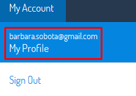
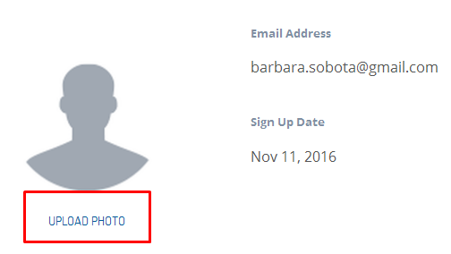
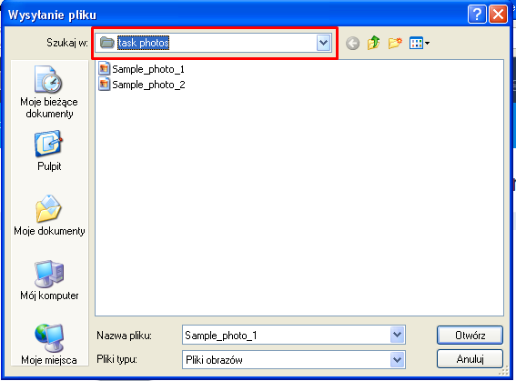
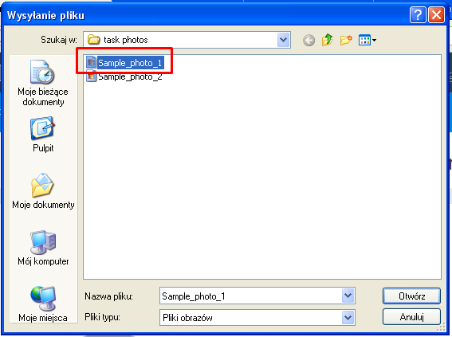
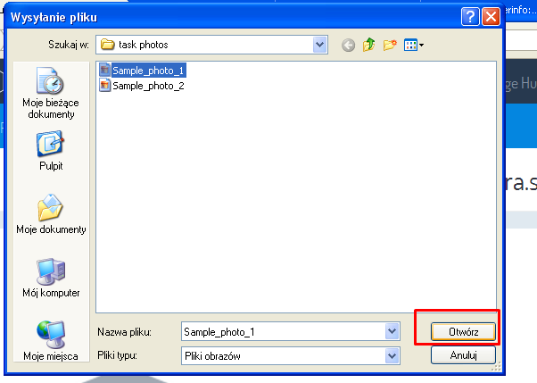
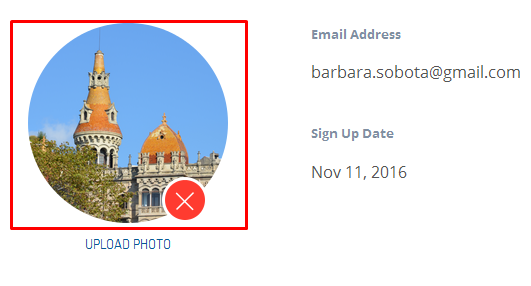
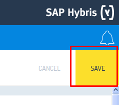

---
title: 'Adding "My profile" image in the Builder of Yaas'
type: 'Tutorial'
---
This tutorial explains how to add an image in the "My profile" section of the Builder in 7 steps. Every step is visualized by a screenshot to guide you through the process.
Step 1 - Go to "My Account" section and select "My profile".

Step 2 - Click the "Upload photo" link on the left side of the "Profile" page.

Step 3 - Navigate to the desired image using the opened attachment dialog box.

Step 4 - Select the image you want to upload.

Step 5 - Click "Open" to upload the image.

Step 6 - Once the upload is completed you will see the image on the "Profile" page.

Step 7 - To make the change permanent click the "Save" button in the top right corner of the "Profile" page.

Troubleshooting
"My profile is not visible" - Please check if you are logged in the Builder properly.
"The image I want to choose is not visible in the attachment dialog box" - Please check the extension of the image and make sure it has a commonly used extension (gif, bmp, jpg, png).